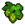
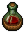
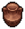

Beer
Beer is a food. It can be consumed to restore 12 .
Obtaining
| Blueprint | Result | Materials | Mastery | Technology |
|---|---|---|---|---|
Brewing Stand |
5x |
5x  Hops5x 10x Fuel |
||
| Ticks: 6 Points / craft: 1 | ||||
Study and alchemy
| Requires | Points | Runes |
|---|---|---|
| 10x |
30 10 |
Uses
- Items
| Blueprint | Results | Materials | Technology |
|---|---|---|---|
 Distillation Cube |
1x  Wine2x  Clay Urn20x Fuel |
Reanimation Liquid (technology) |
Template:Food navbox